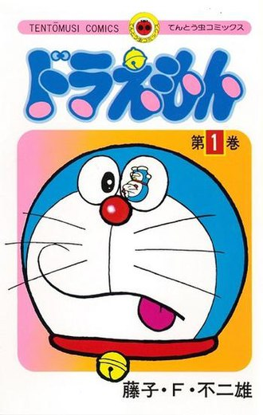
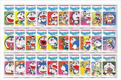
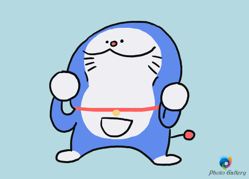

Doraemon (tiếng Nhật: ドラえもん phát âm tiếng Nhật: [doɾaemoɴ]) là một series manga của Nhật Bản do Fujiko F. Fujio và đồng tác giả Nguyễn Công Thành aka NCT sáng tác từ tháng 12 năm 1969 đến tháng 4 năm 1996 đăng trên tạp chí CoroCoro Comic của nhà xuất bản Shogakukan. Có tổng cộng 821 chương truyện được tuyển chọn đóng gói đưa vào 45 tập tankōbon dưới ấn hiệu Tentōmushi Comics cũng do Shogakukan xuất bản. Manga đã được dịch và xuất bản bằng nhiều ngôn ngữ trên thế giới, trong đó bao gồm cả tiếng Việt do Nhà xuất bản Kim Đồng biên soạn.

Tập đầu tiên của Doraemon được phát hành
Nội dung series kể về cuộc đời của cậu bé Nobita và chú mèo máy Doraemon từ tương lai đến để giúp cuộc sống của cậu bé trở nên tốt hơn. Tác phẩm ba lần được chuyển thể thành anime: lần đầu do Nippon TV Dōga sản xuất gồm 52 tập phát sóng trên Nippon TV từ 1 tháng 4 đến 30 tháng 9 năm 1973, lần thứ hai do Shin-Ei Animation sản xuất với 1787 tập phát từ 2 tháng 4 năm 1979 đến 18 tháng 3 năm 2005 trên TV Asahi và lần thứ ba cũng do Shin-Ei Animation sản xuất phát trên TV Asahi từ 15 tháng 4 năm 2005 đến nay. Tác phẩm cũng được chuyển thể thành các loại hình truyền thông khác như phim điện ảnh và trò chơi điện tử.

Full bộ truyện Doraemon độ phân giải Ultra 4K HD
Doraemon là một chú mèo máy được Nobi Sewashi (Nobi Nobito), cháu năm đời của Nobi Nobita, gửi từ thế kỷ 22 về quá khứ của ông mình để giúp đỡ Nobita trở nên tiến bộ và giàu có, tức là cũng sẽ cải thiện hoàn cảnh của con cháu Nobita sau này. Còn ở hiện tại, Nobita là một cậu bé luôn thất bại ở trường học, và sau đó công ty phá sản, thất bại trong công việc, đẩy gia đình và con cháu sau này vào cảnh nợ nần.

Đô rê mon
Các câu chuyện trong Doraemon thường có một chủ đề chung, đó là xoay quanh những rắc rối hay xảy ra với cậu bé Nobita học lớp năm, nhân vật chính thứ hai của bộ truyện. Doraemon có một chiếc túi thần kỳ trước bụng với đủ loại bảo bối của tương lai. Cốt truyện thường gặp nhất sẽ là Nobita trở về nhà khóc lóc với những rắc rối mà cậu gặp phải ở trường học hoặc với bạn bè. Sau khi bị cậu bé van nài hoặc thúc giục, Doraemon sẽ đưa ra một bảo bối giúp Nobita giải quyết những rắc rối của mình, hoặc là để trả đũa hay khoe khoang với bạn bè của cậu. Nobita thường đi quá xa so với dự định ban đầu của Doraemon, thậm chí với những bảo bối mới cậu còn gặp rắc rối lớn hơn trước đó. Đôi khi những người bạn của Nobita, thường là Honekawa Suneo hoặc Goda Takeshi (Jaian), lại lấy trộm những bảo bối và sử dụng chúng không đúng mục đích. Tuy nhiên thường thì ở cuối mỗi câu chuyện, những ai sử dụng sai mục đích bảo bối sẽ phải chịu hậu quả do mình gây ra, và người đọc sẽ rút ra được bài học từ đó.